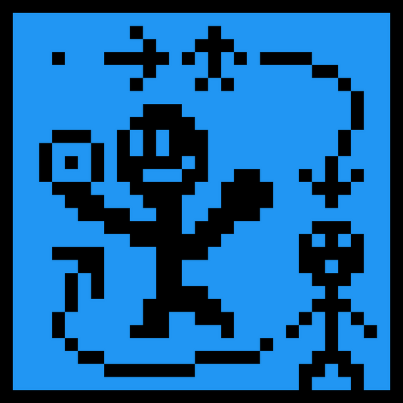

Games
Placeholder
A classic noir murder mystery with a funky twist that get's progressively goofier the closer you get to solving the mystery. This game is sure to pique the puzzler's mind and put a smile on any and every player's face.

Level Down
Tired of working tirelessly to level up your character for the end to somehow extend further and further from reach? Bored of the same old monotonous experience grinding? Well how about leveling down for a change? Try your hand at losing to progressively easier and easier enemies in an attempt to lose exp and lower your level rank for a fun twist on the classic fighting game.

Pix
In this charming platformer you'll start out with a measly few pixels and work to collect more as you solve puzzles and fight enemies. Watch your character, enemies, and settings increase resolution and definition as you collect more pixels to directly affect the appearance of the game as you go along!
